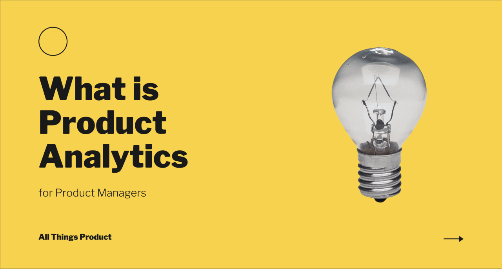

MY SKILLS


I am a free enthusiast Data Analyst who is looking forward to working and experiencing a roller coaster ride. A driven individual who enjoys working with and exploring various types of data. I have a tendency to embrace new opportunities and explore them.
"Everyone is unique in his own way," wrote the famous poet Milton. God sends everyone into the world with potential and a noble purpose to serve. My name is Kushmeet Kaur, and I am from the state of Chhattisgarh. I am currently employed as a Data Analyst in a reputable IT firm. Furthermore, I am competent, capable, and self-assured. From the beginning, I learned to be very hardworking and passionate about my career. I've been taught to focus on my passion since I was a child.
I never pursued bookish knowledge, and it is not true that only a book can provide you with sufficient experience and knowledge of the real world. I'm here today because I've been training myself and preparing for the world
I've always been interested in programming, learning about computers, and developing them. I look forward for more opportunities.

CBSE 10TH BOARD, 2018
My 10th board examination was completed at Delhi Public School, Bhilai C.G.
I was successful in passing my exams with an 80%, and I worked hard to reach my goal.I have a clear vision of how I want my future to be and have been working towards it for a long time.

2020 12th CBSE BOARD
My 10th board examination was completed at Delhi Public School, Bhilai C.G.
With an 85% parcentage, I was able to successfully complete my examinations.
I was always interested in business and analysis, which led me to choose Commerce as one of my core subjects in 12th grade.

I am currently a Business Analytics student at Christ University in Lavasa, Pune. I am currently in my second year of a Bachelor's degree program. I was always interested in business and the analytical field, which motivated me to pursue a career in business analytics. I'm looking forward to making a memorable and exciting future out of the chosen field.